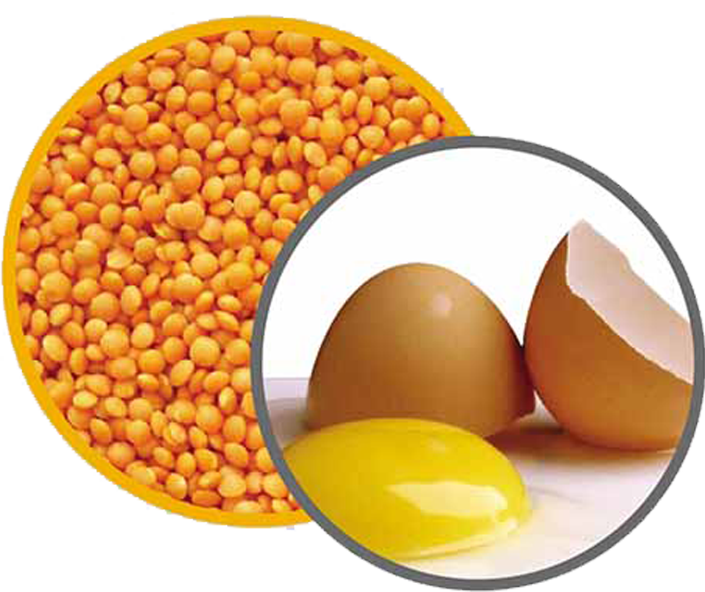
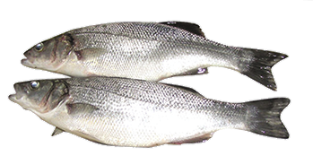
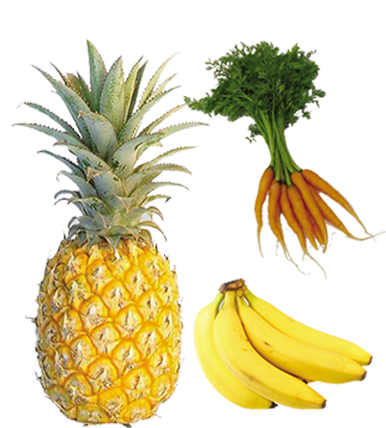

The main function of food rich in protein and some minerals (such as calcium and phosphorus) is to build and repair tissue.
E.g. all meat and fish; pulses such as lentils, beans, black gram, green gram cowpea, milk, cheese, curd and eggs, etc.


Protective / Regulatory food
Vitamin and mineral rich food regulate our body processes, protect our health and help build tissue.
E.g. All fruits and vegetables
Although most food are generally categorized into one of the three functions above, these groupings are not always accurate as most food have a combination of nutrients that serve different functions in our body.

E.g. Rice provides a good source of carbohydrates, proteins and B-vitamins for Sri Lankan people, most of whom eat it three times a day.